When integrating with the Google API using MuleSoft, choosing between a service account and OAuth 2.0 depends on the nature of the application and the access requirements.
A service account is ideal for server-to-server interactions where no user interaction is needed. It allows MuleSoft to authenticate to Google APIs independently, bypassing the need for user credentials, which is useful for backend processes and automation tasks, like accessing resources on Google Cloud Platform or Google Workspace for predefined tasks. Since service accounts authenticate with a JSON Web Token (JWT) and private key, they are well-suited for high-security environments, offering a streamlined, controlled, and scalable way to access Google APIs without requiring end-user authorization.
In this Codelab, you'll learn how to set up a Google service account and call a Google API.
Log into Google Cloud and navigate to APIs & Services
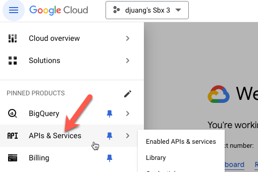
Click on Credentials and click on Create Credentials.
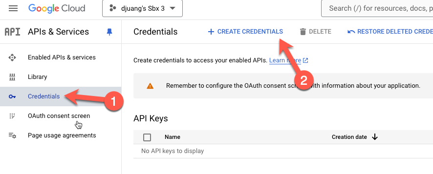
Click on Service account
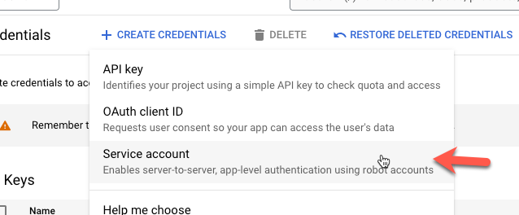
Fill in the Service account name and Service account ID and click on Create and Continue. Then click on Done
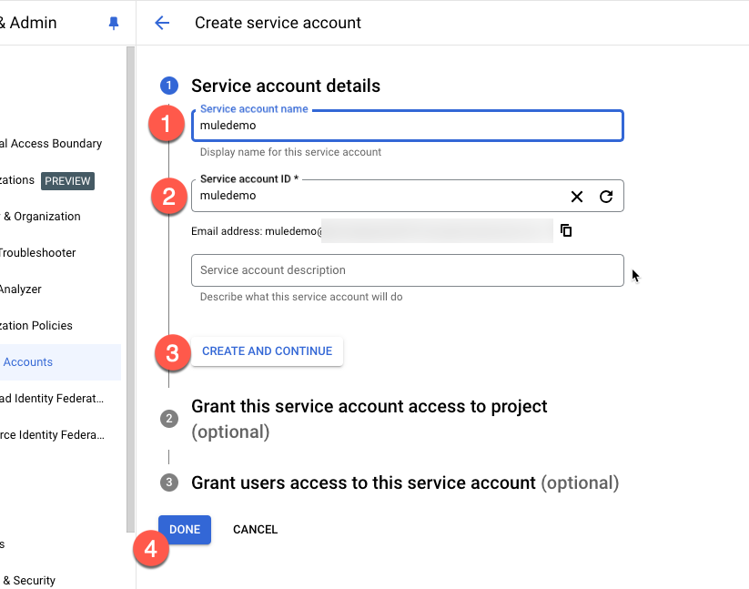
Select the newly created account under Service Accounts
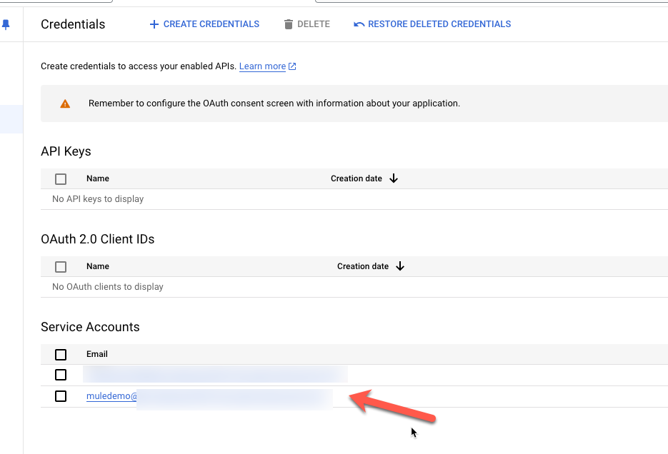
Click on Keys
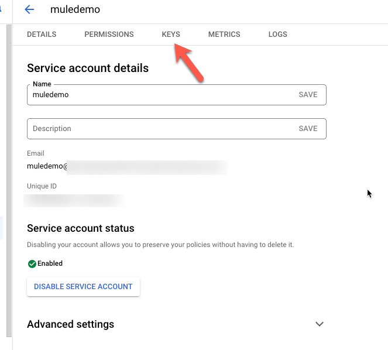
Click Add Key and click on Create New Key
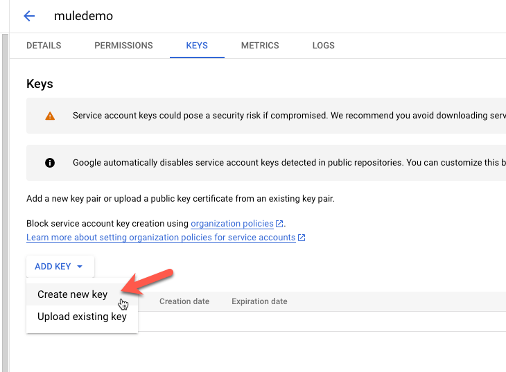
Keep the default JSON section and click on Create. It'll download a file to your local desktop. Make sure you know where it was saved. We'll need that file for the next step.
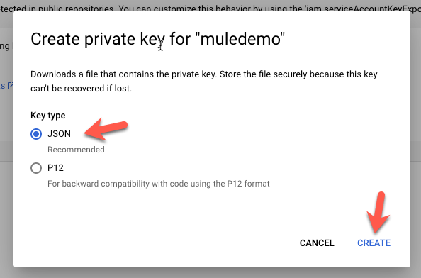
We're going to need the Private Key and the Client Email from the file.
Assuming you've created a new project in Anypoint Studio already, let's create a Configuration Properties file. In the src/main/resources folder, create a new file called mule-properties.yaml
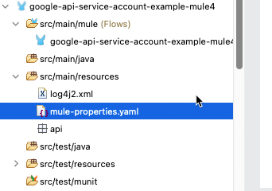
Create the following properties in the file.
google:
privateKey: ""
clientEmail: ""
scope: "https://www.googleapis.com/auth/drive.readonly"Open the JSON file that you downloaded from Google Cloud Platform and copy and paste the values for the privateKey and clientEmail into the properties file.
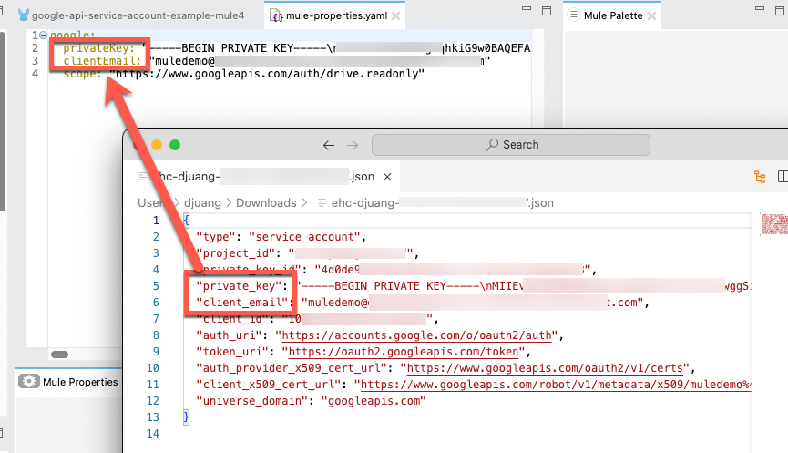
Go to the Global Configuration Elements tab and click on Create.
In the filter field, type in properties and select Configuration properties and click on OK
Find the newly create properties file and click on OK
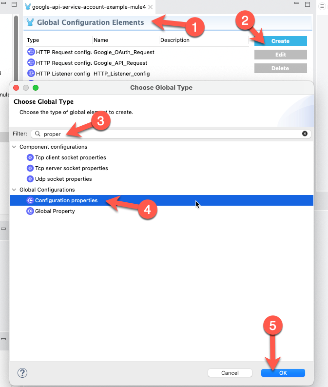
Now that you have the configuration properties setup, let's move on to the next step to create the flow.
In order to generate the RSA signed JWT, we need to add a DataWeave library to our project. Switch over to Anypoint Platform and navigate to Exchange.
In the search field, type in dataweave jwt
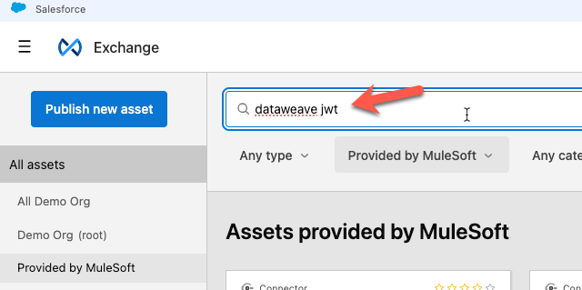
Click on DataWeave JWT Library
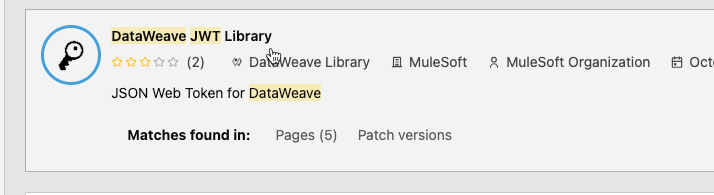
On the far right, click on Dependency Snippets
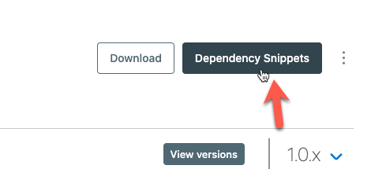
Click on Copy
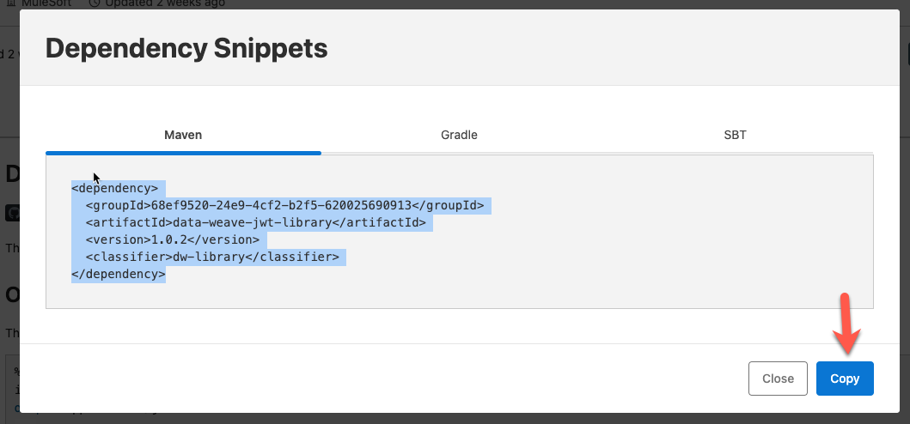
Switch back to Anypoint Studio and open the pom.xml file in the Mule application
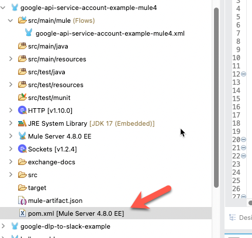
Scroll down to the <dependency> section and paste the XML like the screenshot below and click Save
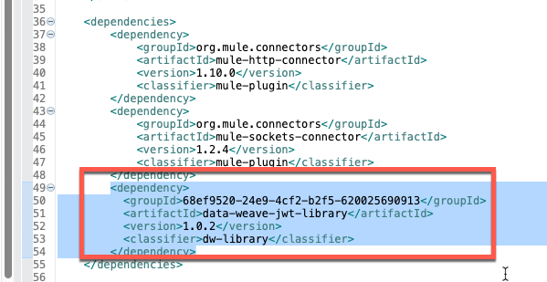
For the Mule application, we're going to keep it simple. Drag and drop the following components to make the following flow below: HTTP Listener, Transform Message, HTTP Request, HTTP Request
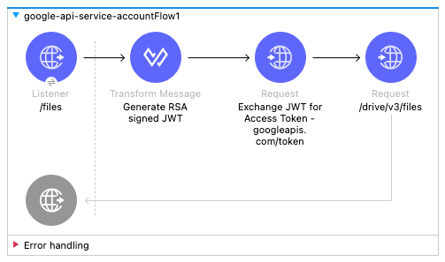
The configuration for the HTTP Listener is pretty straightforward. Keep the default values for the Connector configuration (e.g. localhost:8081) and set the path to /files
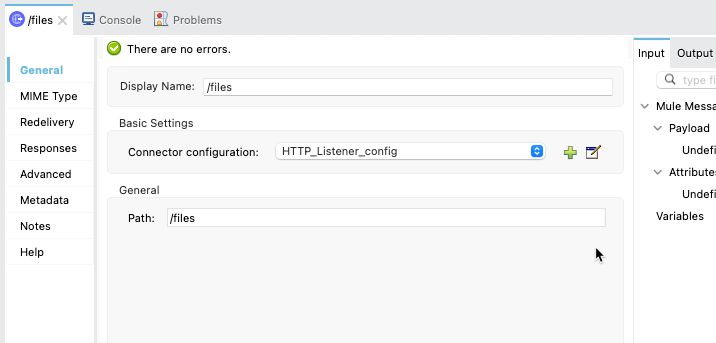
The Transform Message component will generate the RSA signed JWT that you need to pass to the Google endpoint to generate the access token.
Change the destination from Payload to a variable called token
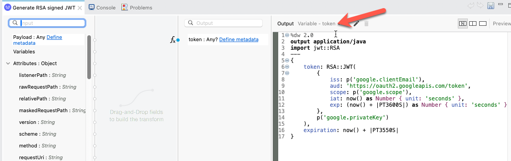
And copy and paste the script below into the script editor for the component.
%dw 2.0
output application/java
import jwt::RSA
---
{
token: RSA::JWT(
{
iss: p('google.clientEmail'),
aud: 'https://oauth2.googleapis.com/token',
scope: p('google.scope'),
iat: now() as Number { unit: 'seconds' },
exp: (now() + |PT3600S|) as Number { unit: 'seconds' }
},
p('google.privateKey')
),
expiration: now() + |PT3550S|
}With the RSA signed JWT, we're going to pass that to the Google Token endpoint to generate the access token. The Configuration should look like this:
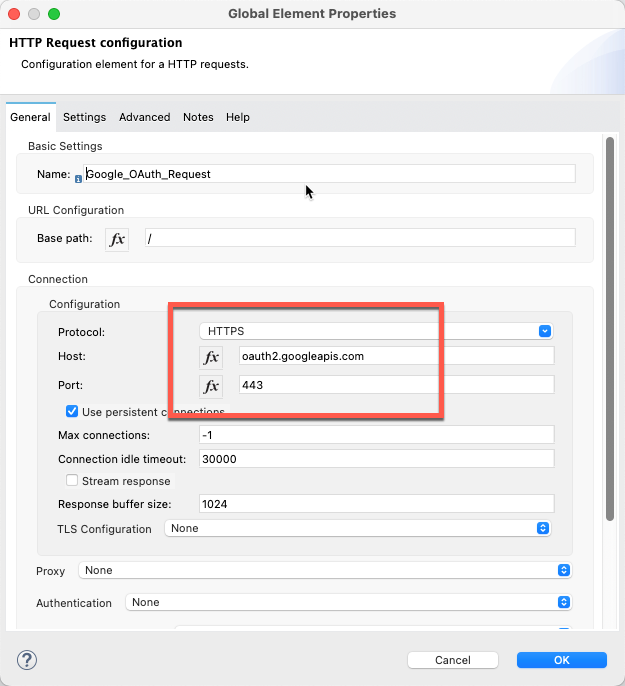
The Request method is a POST and the path is /token
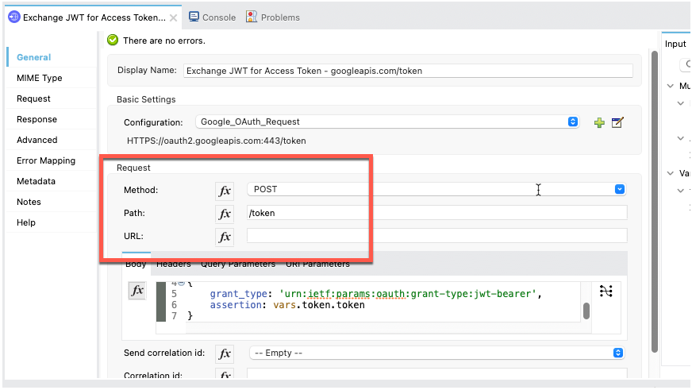
Set the body to the following DataWeave script:
%dw 2.0
output application/x-www-form-urlencoded
---
{
grant_type: 'urn:ietf:params:oauth:grant-type:jwt-bearer',
assertion: vars.token.token
}The Google Token endpoint will return the access token you need to call the Google API. Let's configure the 2nd HTTP Request component. For the Connector configuration, set it to the following:
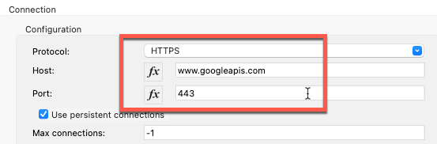
For the Request section, configure the following parameters. Method should be set to GET and the Path should be set to /drive/v3/files
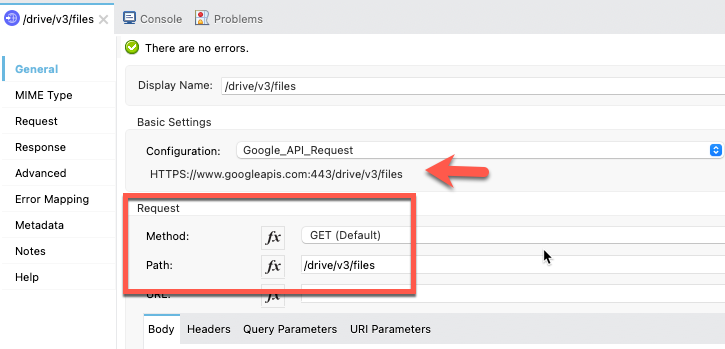
Lastly, we need to pass the access token in the header. Click on Header and add the following for Authorization:
"Bearer " ++ payload.access_token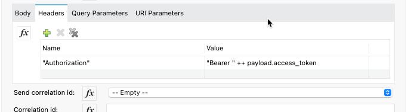
That's it! Go ahead and save the project and move on to the next step.
Right click on the canvas and select Run project <name>
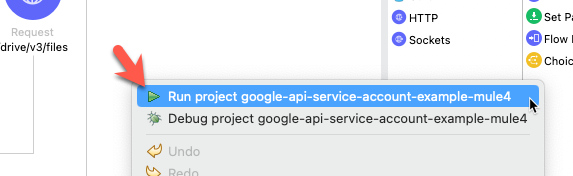
Once it's deployed, navigate back to your browser and go the following URL
http://localhost:8081/files
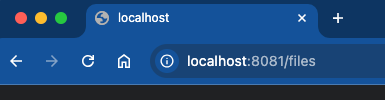
If everything was configured successfully, you'll get back a list of files from the Google API.
Congratulations on completing this Codelab. Setting up a Mule flow to call a Google API using a Service Account is pretty simple. When calling Google APIs from MuleSoft, using a service account is best for server-to-server interactions, where access doesn't require user consent and is needed for backend processes, automation, or system-level integrations. Service accounts allow MuleSoft to authenticate independently with secure credentials, enabling scalable access to Google resources without user involvement.